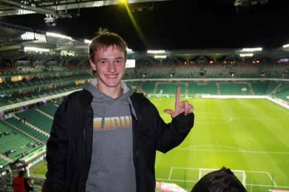

Radomir Piątkowski
Studiuję na Uniwersytecie Ekonomicznym w Krakowie, na 1-szym roku, kierunku Informatyka stosowana. Są to studia niestacjonarne
Uniwersytet Ekonomiczny w Krakowie(UEK)
Jedna z pięciu polskich państwowych wyższych szkół ekonomicznych. Jest największym w Polsce pod względem liczby studentów uniwersytetem poświęconym naukom ekonomicznym,
a także trzecią co do wielkości uczelnią w Krakowie (po Uniwersytecie Jagiellońskim i Akademii Górniczo-Hutniczej). Jest również drugą najstarszą w Polsce państwową uczelnią ekonomiczną.
Informatyka Stosowana
Dyscyplina oraz kierunek nauczania, wiążący ze sobą kompetencje informatyczne z dogłębną znajomością potrzeb określonej praktyki. Określony podzbiór wiedzy dyscypliny informatyka jest
logicznie uzupełniany wiedzą specjalistyczną. W podstawowym zakresie obejmuje praktyczne wykorzystanie narzędzi informatycznych w innych dyscyplinach w każdej dziedzinie nauk.
Czemu wybrałem ten kierunek
- Możliwość rozwijania pasji
- Możliwość poszerzania wiedzy na temat Informatyki
- Szeroki pogląd na to, czym jest informatyka i programowanie – od budowy komputera i układów scalonych po programowanie i sztuczna inteligencję.
- Pozwala dużo szybciej pojąć więdzę z zakresu studiów, dzięki wykwalifikowanej kadrze pedagogicznej
- Bardzo szerokie perspektywy na przyszłość
Trochę o mnie
| Plany Zawodowe |
Osiągnięcia |
Hobby |
- - Ukończenie studiów
- - Znalezienie pracy w Krakowie
- - Kontynuowanie nauki w zakresie cyberbezpieczeństwa
- - Uczestnictwo w "Global Cyberlimpics"
-
- - Ukończenie kursu "Cyber Security"
|
- - 1-sze miejsce w "blabla Championship"
- - 2-gie miejsce w "wuwuwu Championship"
- - 1-sze miejsce w Mistrzostwach juniorów w "blabla"
- - 3-cie miejsce w Mistrzostwach młodzików w "klele"
|
- - Informatyka
- - Wspinaczka
- - Pływanie
- - Karabiny maszynowe
- - Kalistenika
- - Piłka nożna
|
Fotografia 😀
